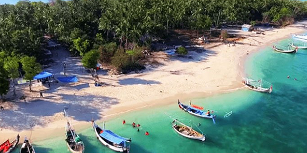
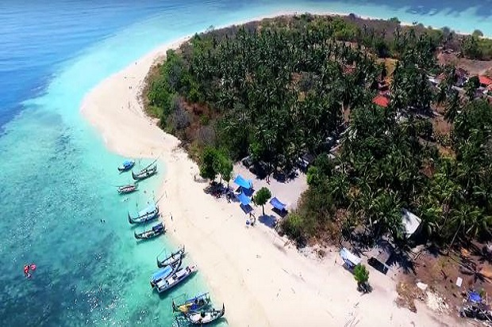

Sejarah
Sejarah Sumenep memiliki latar belakang yang panjang dan kaya akan
peristiwa-peristiwa penting dalam perjalanan politik dan budayanya.
Awalnya dikenal sejak keruntuhan kerajaan Singasari, Sumenep telah
memainkan peran penting dalam konteks sejarah Jawa dan Madura. Pada
periode sebelum pemerintahan Mataram Islam, Sumenep berada di bawah
kekuasaan Demak dan Giri. Namun, dengan kemunculan Mataram Islam di
awal abad ke-17, Sumenep dan Madura secara keseluruhan menjadi
bagian dari wilayah yang ditaklukkan oleh Mataram. Pemerintahan
Mataram di Madura dipimpin oleh Pangeran Cakraningrat setelah
pendudukan Mataram pada tahun 1624, namun berbagai konflik internal
dan perlawanan dari keluarga bangsawan di Madura Timur memunculkan
ketidakpuasan. Akhirnya, dengan bantuan VOC, Sumenep dan Pamekasan
berhasil melepaskan diri dari dominasi Jawa pada tahun 1705.
Selama masa kolonial Hindia-Belanda, Sumenep dihapuskan statusnya sebagai kerajaan dan regent menjadi
pegawai pemerintah kolonial.
Industri garam menjadi pusat ekonomi utama di Sumenep, dengan banyak penduduk tergantung padanya untuk
kehidupan mereka.
Selama pendudukan Jepang selama Perang Dunia II, Sumenep mengalami penderitaan ekonomi dan kekurangan
pangan. Meskipun demikian, ada beberapa perkembangan pendidikan dan infrastruktur yang dilakukan oleh
pemerintah Jepang di Sumenep.
Secara keseluruhan, sejarah Sumenep mencerminkan dinamika politik, ekonomi, dan sosial yang kaya, serta
peran yang dimainkan dalam konteks sejarah Indonesia yang lebih luas.
Geografis

Luas Wilayah Kabupaten Sumenep adalah 2.093,457573 km2, terdiri dari pemukiman seluas
179,324696 km2,
areal hutan seluas 423,958 km2, rumput tanah kosong seluas 14,680877 km²,
perkebunan/tegalan/semak
belukar/ladang seluas 1.130,190914 km2, kolam/ pertambakan/air payau/danau/waduk/rawa seluas
59,07 km 2,
dan lain-lainnya seluas 63,413086 km2. Untuk luas lautan Kabupaten Sumenep yang potensial
dengan
keanekaragaman sumber daya kelautan dan perikanannya seluas +50.000 km2.
Jumlah pulau berpenghuni di Kabupaten Sumenep hanya 48 pulau atau 38%, sedangkan pulau yang tidak
berpenghuni sebanyak 78 pulau atau 62%. Pulau Karamian di Kecamatan Masalembu adalah pulau terluar di
bagian utara yang berdekatan dengan Kalimantan Selatan dan jarak tempuhnya + 151 Mil Laut dari Pelabuhan
Kalianget, sedangkan Pulau Sakala adalah pulau terluar di bagian timur yang berdekatan dengan Pulau
Sulawesi dan jarak tempuhnya dari Pelabuhan Kalianget + 165 Mil Laut.Pulau yang paling utara adalah
Pulau Karamian dalam gugusan Kepulauan Masalembu dan pulau yang paling timur adalah Pulau Sakala.
Wisata

Wisata kesehatan di Pulau Giliyang Kecamatan Dungkek merupakan daerah di kabupaten Sumenep yang
mempunyai kandungan oksigen sebesar 21,5% atau 215.000 ppm.Selain terkenal karena kemurnian
oksigennya, pulau Giliyang juga memiliki wisata Gua "Celeng" Gua ini terletak di Desa Banraas, sekitar 3
km dari tepi pantai Gili Iyang. Untuk bisa sampai di gua ini, para wisatawan harus berjalan turun
melalui bebatuan kecil yang akan dipandu oleh guide. Gua ini ditemukan sekitar tahun 2014 oleh warga
sekitar. Sebelum bernama Gua Mahakarya, gua ini bernama Gua Celeng dikarenakan gue ini dihuni dan
dijadikan tempat persembunyian oleh babi hutan. Namun seiring berjalannya waktu, celeng (babi hutan)
mulai meninggalkan gua ini. Keindahan batu stalaktit dan stalagmit yang ada di gua ini bisa memukau para
wisatawan karena bisa melihat dinding gua yang berkelap-kelip terkena cahaya. Gua ini memiliki luas
sekitar 800 m2 dan terbagi menjadi tujuh ruangan yang bisa dinikmati. Penerangan di gua ini benar-benar
murni dari cahaya matahari, sehingga hal ini menjadi keunikan tersendiri untuk digunakan sebagai spot
foto. Dengan beberapa bebatuan stalaktit dan stalagmit yang masih aktif serta menghasilkan bebatuan
baru, di dalam gua juga terdapat bebatuan bersinar karena pada gua ini mengandung butiran-butiran kecil
yang jika terkena cahaya maka akan memancarkan kilau yang indah.dan masih banyak lagi wisata lainnya
yang ada di Kabupaten Sumenep